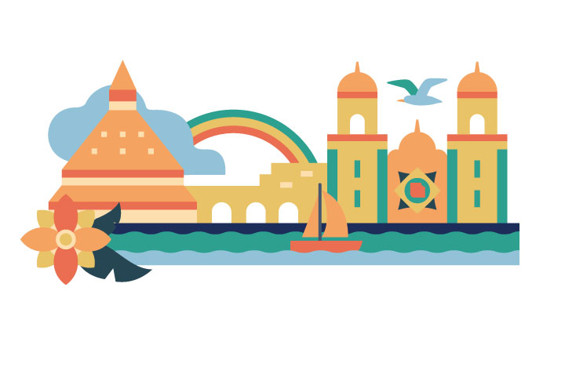

Cet exerice consiste à la création d'un nuancier, puis la modification des couleurs d'un exercice.
Fichier de départ
Ouvre ton exercice 00_transformation.
Palette de couleurs
#264653
#2a9d8f
#e9c46a
#f4a261
#e76f51
Étapes
Créez un nouveau dossier dans ton nuancier.
Ajoute les cinq couleurs ci-haut dans ton nuancier.
Utilise la baguette magique et la pipette pour modifier les couleurs de ton exercice 0_transformation. Le modèle suivant te montre le résultat final: 
Change le vert pour le bleu foncé (264653)
Le bleu de l'arc-en ciel pour le turquoise (2A9D8F)
Le jaune pour le jaune (E9C46A)
Le orange pour le orange (F4A261)
Le rouge pour du rose (E76F51)